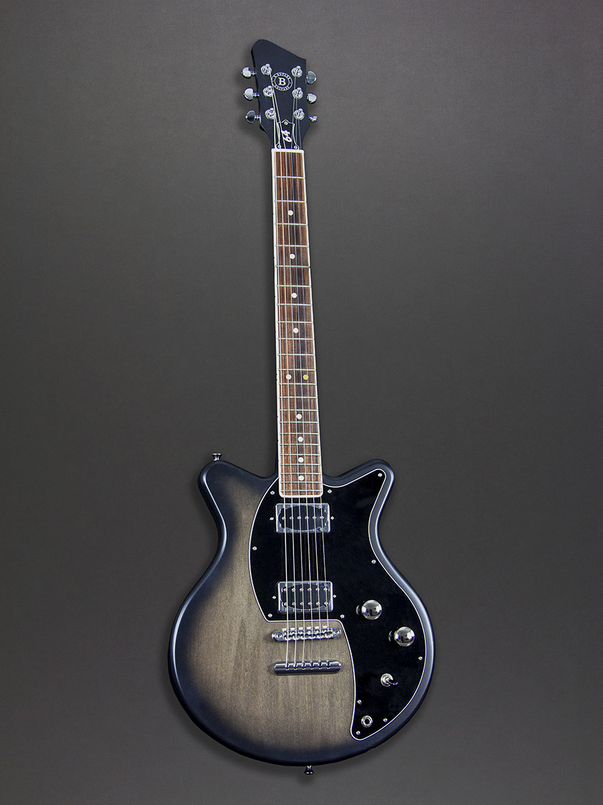
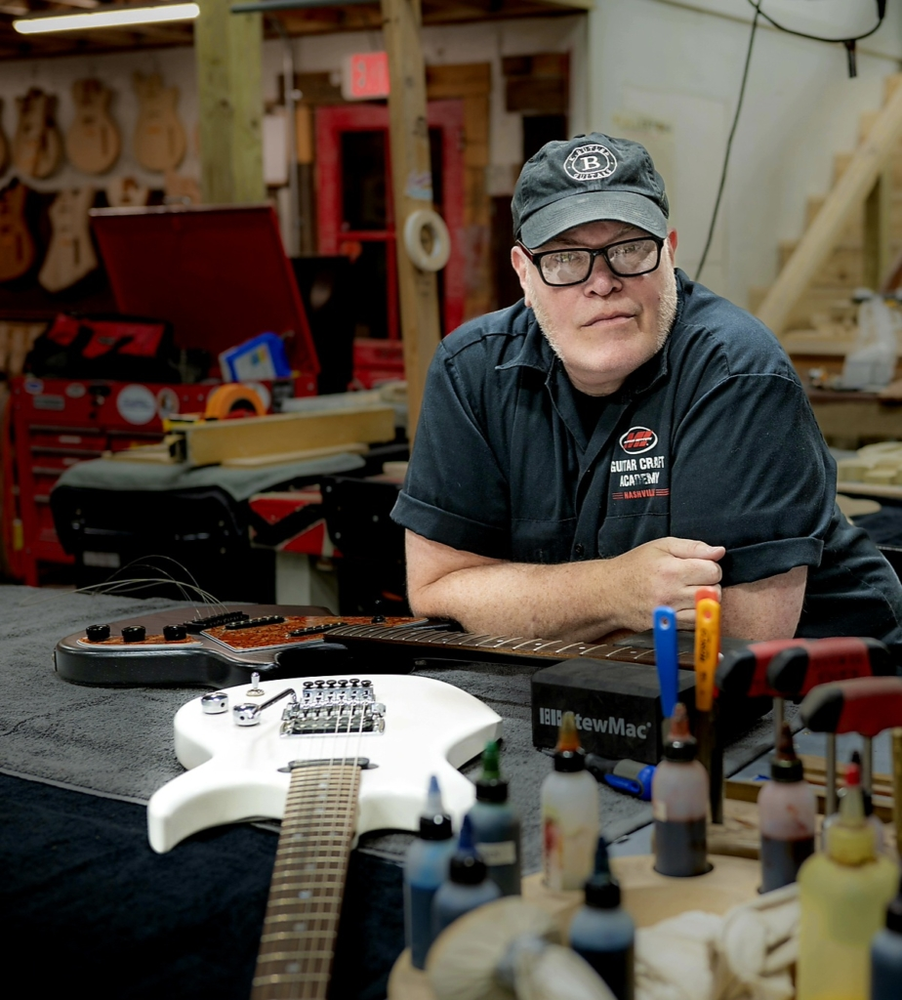

K. Butler Guitars
Unleash your sound, crafted to perfection
K. Butler, a name synonymous with unparalleled artistry and precision in the world of guitar making. With over three decades of experience, K. Butler has become a revered figure among musicians and collectors alike. Born with an innate passion for music and a natural talent for craftsmanship, K. Butler embarked on a journey to redefine the boundaries of custom electric guitar creation.
From a young age, K. Butler exhibited an unwavering dedication to mastering the intricate art of luthiery. Studying under renowned mentors and immersing himself in the rich heritage of guitar making, K. Butler honed his skills and developed a deep understanding of the harmonious interplay between design, materials, and sound.
A true perfectionist at heart, K. Butler approaches each guitar as a unique masterpiece, meticulously handcrafting every detail to ensure unparalleled playability, tone, and aesthetics. His commitment to excellence is evident in the flawless finishes, exquisite fretwork, and precise electronics that grace each instrument bearing the K. Butler signature.
Beyond his technical prowess, K. Butler possesses an intuitive ability to connect with musicians on a profound level. Each guitar becomes an extension of its player’s identity, an instrument that inspires and empowers them to explore new musical frontiers.
As a master guitar craftsman, K. Butler has earned a reputation for pushing boundaries and embracing innovation. Continually exploring new techniques, materials, and technologies, he infuses his guitars with a perfect blend of tradition and modernity, blending timeless craftsmanship with cutting-edge advancements.
Today, K. Butler’s creations grace the hands of discerning musicians across the globe, from passionate amateurs to world-renowned artists. Their guitars have become prized possessions, treasured for their extraordinary tone, exceptional playability, and breathtaking beauty.
With every stroke of the chisel and every note that resonates through his instruments, K. Butler continues to redefine what is possible in the realm of custom electric guitars. His unwavering commitment to excellence, relentless pursuit of perfection, and deep love for music ensure that the legacy of K. Butler will resonate through generations of musicians to come.


Mission
Shaping the future of guitar making, one masterpiece at a time.
At K. Butler Guitars, our mission is to craft exceptional custom electric guitars that inspire musicians and elevate their artistry to new heights. We are dedicated to pushing the boundaries of traditional guitar making, blending meticulous craftsmanship with innovative design and cutting-edge technology. Our commitment to excellence drives us to create instruments that deliver impeccable playability, unparalleled tone, and timeless beauty. With a deep understanding of musicians’ aspirations, we strive to create a harmonious connection between player and instrument, empowering artists to unleash their creativity and express their unique musical voice. At K. Butler Guitars, we are passionate about shaping the future of guitar making, one masterpiece at a time.